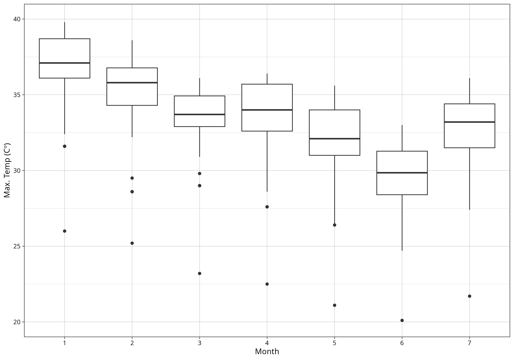
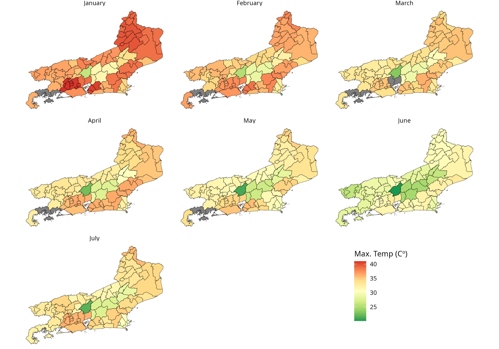

climateBR was developed to help social scientists operationalize research on climate shocks in Brazil. The package provides tools to download, process, and analyze historical meteorological data from the Brazilian National Institute of Meteorology (INMET).
Installation
# From CRAN
install.packages("climateBR")
# or use the development version with latest features
remotes::install_github("kaiorb52/climateBR")Examples
With climateBR, you can download historical INMET data using the download_inmet() function, specifying one or more years.
The downloaded raw station CSV files can then be processed into a partitioned Apache Arrow dataset using build_inmet_dataset(). Finally, read_inmet() can be used to query the processed dataset.
library(climateBR)
download_inmet(
years = 2026,
unzip_to = "data/raw/inmet"
)
build_inmet_dataset(
input = "data/raw/inmet/",
output = "data/processed/inmet/"
)
df_inmet <- read_inmet(path = "data/processed/inmet")The package also provides datasets containing information on the nearest INMET stations to each municipality in Brazil.
data("mun_stations")
# The `mun_stations` dataset was created using the `nearest_stations()` function and contains the five nearest stations for each municipality.
temp_rj <- df_inmet |>
group_by(ano, mes, codigo_wmo) |>
summarise(
temp_max = max(
temperatura_maxima_na_hora_ant_aut_c,
na.rm = TRUE
)
) |>
left_join(
mun_stations |>
filter(station_order == 1) |>
select(state_muni, code_ibge7, code_wmo),
by = c("codigo_wmo" = "code_wmo")
) |>
filter(state_muni == "RJ") |>
collect() |>
arrange(-temp_max)
# A tibble: 644 × 6
# # Groups: ano, mes [7]
# ano mes codigo_wmo temp_max state_muni code_ibge7
# <int> <int> <chr> <dbl> <chr> <dbl>
# 1 2026 1 A601 41 RJ 3305554
# 2 2026 1 A601 41 RJ 3304144
# 3 2026 1 A601 41 RJ 3303609
# 4 2026 1 A601 41 RJ 3302270
# 5 2026 1 A601 41 RJ 3302007
# 6 2026 1 A621 40.8 RJ 3305109
# 7 2026 1 A621 40.8 RJ 3303500
# 8 2026 1 A621 40.8 RJ 3303203
# 9 2026 1 A621 40.8 RJ 3302858
# 10 2026 1 A621 40.8 RJ 3300456
# # ℹ 634 more rows
# # ℹ Use `print(n = ...)` to see more rows
library(ggplot)
temp_rj |>
ggplot(aes(x = as.character(mes), y = temp_max)) +
geom_boxplot() +
theme_linedraw() +
labs(y = "Max. Temp (Cº)", x = "Month") +
ylim(20, 40)

library(geobr)
mun_24 <- geobr::read_municipality(year = 2024)
mun_rj <- mun_24 |>
filter(abbrev_state == "RJ") |>
select(code_muni, geom)
mun_temp_rj <- mun_rj |>
left_join(
mun_stations |> filter(station_order == 1) |> select(code_ibge7, code_wmo),
by = c("code_muni" = "code_ibge7")
) |>
left_join(
temp_rj,
by = c("code_wmo" = "codigo_wmo")
)
mun_temp_rj$mes <- factor(
mun_temp_rj$mes,
levels = 1:12,
labels = month.name
)
ggplot() +
geom_sf(data = mun_temp_rj, aes(fill = temp_max)) +
scale_fill_distiller(palette = "RdYlGn") +
facet_wrap(.~mes) +
labs(fill = "Max. Temp (Cº)") +
theme_void() +
theme(
legend.position = c(0.785, 0.185),
plot.background = element_rect(fill = "white")
)

Citation
To cite package ‘climateBR’ in publications use:
- Bárbara K (2026). climateBR: Download Rainfall, Temperature, and Wind Data from Brazil. R package version 0.1.0, https://CRAN.R-project.org/package=climateBR.
@Manual{,
title = {climateBR: Download Rainfall, Temperature, and Wind Data from Brazil},
author = {Kaio Bárbara},
year = {2026},
note = {R package version 0.1.0},
url = {https://CRAN.R-project.org/package=climateBR},
}